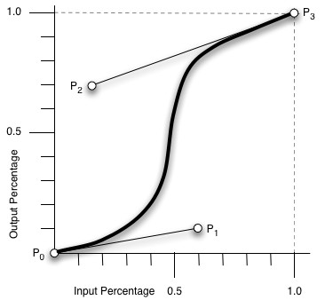
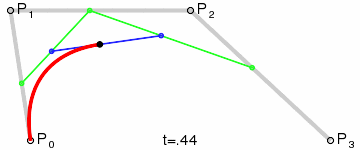
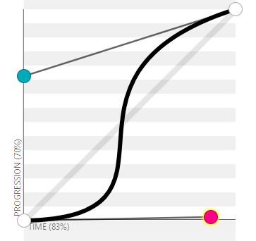

css3过渡动画速率用到的是三阶贝塞尔曲线，曲线有四个点，p0，p1，p2，p3
有几个属性：
linear 规定以相同速度开始至结束的过渡效果（等于 cubic-bezier(0,0,1,1)）。
ease 规定慢速开始，然后变快，然后慢速结束的过渡效果（cubic-bezier(0.25,0.1,0.25,1)）。
ease-in 规定以慢速开始的过渡效果（等于 cubic-bezier(0.42,0,1,1)）。
ease-out 规定以慢速结束的过渡效果（等于 cubic-bezier(0,0,0.58,1)）。
ease-in-out 规定以慢速开始和结束的过渡效果（等于 cubic-bezier(0.42,0,0.58,1)）。
cubic-bezier(n,n,n,n) 在 cubic-bezier 函数中定义自己的值。可能的值是 0 至 1 之间的数值。

其中p0(0,0)，p3(1,1)是固定点，p1(x1,y1)，p2(x2,y2)是操作点；
依次连接p0p1p2p3，假设p0p1上有一动点A，p1p2上有一动点B，p2p3上有一动点C，有p0A/p0p1=p1B/p1p2=p2C/p2p3=t
确定A,B,C点后,依次连接ABC,假设AB上有一动点E，BC上有一动点F，有AE/AB=BF/BC=t
确定E,F点后，依次连接EF，假设EF上有一动点P，有EP/EF=t
点P的移动轨迹就是所得结果，cubic-bezier(n,n,n,n)中的四个参数为(x1,y1,x2,y2)
想看效果图可以参考：https://www.jianshu.com/p/55099e3a2899

想实际操作可以参考：https://cubic-bezier.com
